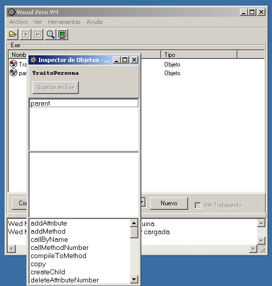
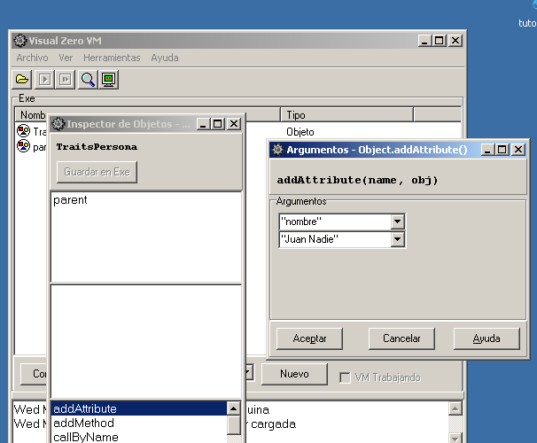
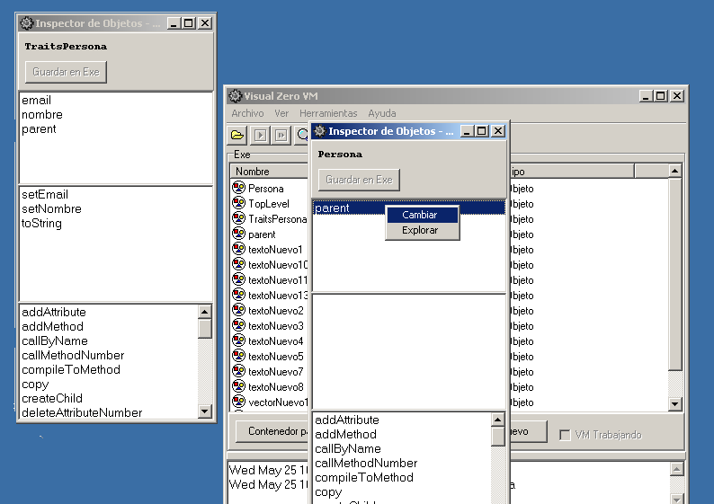
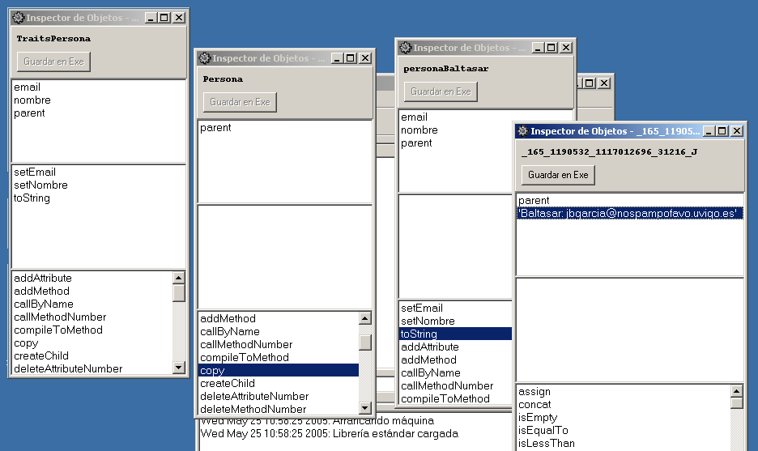

Tutorial: How to use Visual Zero VM

Tutorial: How to use Visual Zero VM |
Lea este documento en español |
|
Visual Zero VM is the same virtual machine present in the command line tool zvm (Zero Virtual Machine), but adding a graphic user interface, which allows better interaction on the user's part, by means of the simple use of the structural reflection capabilities of Zero.
First of all, you should unzip the Zero bin package in a given directory, no matter which one (from now on, the Zero's directory), provided this has not been done before. Also, the standard library should be compiled. In order to do that, you should just open a console in the Zero's directory and type:
za IntStdLib |
You can also try to drag and drop IntStdLib over the za
executable. In some systems, it is needed to give execution permissions to
some files:
chmod +x za |
Now you can try to compile the standard library again if the previous step didn't work.
The standard library must be compiled before using Zero: however, once it has been compiled this step won't be needed to be taken anymore.
The Visual Zero VM program is vzero.exe in Windows
systems, which can be executed from command line by typing:
vzero |
or by double-clicking the file in an explorer window showing the Zero's directory.
.Exe.

All possible values which one deal with inside the VM (Virtual Machine) are objects. In contrast to other VM's, there are not primitive values; primitive values are represented by objects as well. In the Zero VM, integer numbers, floating-point numbers, strings and vectors can be managed, again, represented by average objects.
In the picture above, some functionality of the main application window can be seen: the open folder allows the user to load containers in the system. The glass opens an object explorer, allowing you to explore the objects in the Exe container, initially.
The button in the lower left corner, labeled as Contenedor padre (parent container) makes possible to go upwards in the container's hierarchical relation graph. For example, from the Exe container the Root container would be shown by pressing this button.
The button labeled as nuevo (new) creates an object of the type shown by the combo box at its left. The possible types are: object (regular objects), integer, float, and vector.
Under the container explorer there is a selection box and a button
labeled as Nuevo (new). The list lets you choose among various
different objects. This way, objeto lets you create a new average
object; entero (integer) lets you create an integer number (a
shortcut of sending the message copy to the object LiteralInt);
flotante (float) lets you create a floating-point number; Cadena
(string) lets you create a character string; Vector lets you
create a vector of objects. Once the button nuevo is pressed, a
dialog box is shown asking for some data. The name of the object in case
of a regular one, or for example the numeric value to be represented by
the object in case of choosing an integer or a float, or a text in case of
a character string.
In case of choosing a vector to be created, the value to enter is a little bit more special.
When vector is selected, and once nuevo is pressed, a dialog box asking for the contents of the new vector will be shown. The simplest vector is the empty one (o elements), which can be specified by typing the following:
{} |
However, a vector of one element is specified with:
{ 1 } |
making a vector of 1 elements (its size is 1) with an Int object of value 1. The index of this first value is 0.
When introducing various elements, they are separated by commas.
{ 1, 2, 3 } |
The user must take into account that vectors can contain references to any object, it is not necessary to have all elements of the vector deriving of a given object. For example:
{ 1, "hello", 2.0 } |
It is even possible to include other vectors:
{ 1, { 3, 4 }, 2.0 } |
Press the left button of the mouse over an object shown in the container explorer. Then press the right buton and choose eliminar (erase) from the list. Please note that this does only erase the object from the container ... if it is being referenced by other objects, it will remain in memory.
Start the program and press nuevo, having objeto chosen in the list under the container explorer.

You will be asked for the name of the object. Please enter TraitsPersona (TraitsPerson). Then an object explorer will open, showing the properties of the new TraitsPersona object. The explorer is divided in three sections, up to down: attributes, inherited methods and methods.

Look foraddAttribute in the inherited methods section. Press
the left button of the mouse over it, and then press the right button and
choose ejecutar from the list.

addAttribute with them. The
last step is to press Aceptar, in order for the VM to execute the
given method.

When a method is executed, the standard output is opened, as well as an object explorer with the properties of the object produced by the execution. In this case, they are not relevant, so both windows can be closed, going back to the TraitsPersona object explorer. The new attribute will appear in the list of attributes of the object, the one that appears at the top of the explorer. It is possible to doble-clic it (i.e., press the left button of the mouse quickly two times over it), in order to see the object it is pointing to.The same steps taken for adding the nombre (name) attribute to the TraitsPersona object, can be taken in order to create the attribute "email" with its corresponding value (object) "Juan@nadie.com" ("john@doe.com"). Remember to use the doble-quote to express string objects.
A toString method for TraitsPersona would be
really useful. This method exits in Object, the root of the
inheritance hierarchy, returning the name of the object (or its value,
provided it is an int, float, string, or even vector -a string with the
result of executing the toString of each element-). For
persons, it would be useful to return the most relevant information in a String.
So we need to create a method toString for TraitsPersona.
This method will be tipically called when trying to print an object in
standard output. In the Visual Zero VM, it is also a good way to obtain a
summary of the data stored in the object.
Look for the method addMethod and select, by
right-clicking it, the option ejecutar (execute) from the context
menu. A dialog box similar to the one that was presented for the
attributes will appear. This time, the name of the method, and a vector
with the names of the attributes must be provided. The name of the method
is "toString" (including the double quotes), and an emtpy vector {}
must be entered for its arguments (the toString method
doesn't need any).

Once created (pressing the Aceptar button), the new method will appear in the methods section of the object explorer, the one at the middle of the window. We must enter its source code, so we enter the following Zero assembler (after double-clicking it):
SET nombre |
This assembler code just assigns the object pointed by the nombre
(name) attribute to the return reference register (__rr), and
then concatenates the string literal ": ", followed by the string pointed
by the attribute e.mail.

The new method can be executed the same way any other one has been executed: the option execute of the context menu, once the method is right-clicked. Try it now, and you will obtain athe result as an object explorer of a String object containing:
Juan Nadie: juan@nadie.com |

It could be interesting to create a new pair of methods: setNombre
(setName), with arguments { "n" }, and setEmail,
with arguments { "e" }. Once created, introduce the
following assembly code for each one:
method + setNombre( n )
|
method + setEmail( e )
|

This assembly code just assigns the objects passed as argument to the nombre and email attributes. We are assuming here that the objects received in these functions are strings containing the right information. At least, we could check whether the objects received are strings by placing the following instructions in-between the ASG and SET assembly instructions, in both methods:
IOF String |
With this new code, in case of receiving an object of the wrong "type", an exception is thrown. Please note that this exception throwing is not mandatory.
Now, using the controls below the container explorer of the main window, create a new object, called Persona.


cambiar (change) from the
contextual menu.

Of the scrollable list in the assign object dialog, choose TraitsPersona, (TraitsPerson). Wiht this action, the prototype to be used in order to create new Persona (Person) objects has been created. 
In order to create new person objects, just select the copy
method of the inherited methods list for the object Persona. It
will be needed to give the name of the new object, in double quotes. For
an example of Person with one of the developers of Zero, the name could be
personaBaltasar (baltasarPerson). Once created, the object
will appear in an object explorer. It is not linked to any container, so
it is going to be lost of the explorer is changed. You can make it part of
the container, so this object will be more permanent. In order to achieve
this, just press the button "Save in exe" on the top of the object
explorer. It will appear in the container explorer.
Please note that it is possibe to avoid separating Persona and TraitsPersona, having only one object, say Persona. Each time an object was created, all methods and attributes would be copied at the same time, which would make the copy very expensive. With this separation, the methods exist in only one object (more or less similar to a class), while the state would be copied only each time a new object were created.
The object personaBaltasar has been created, though its
attributes have not been set properly. In order to achieve this, both
methods setEmail and setNombre should be
called with the appropriate data, which is
"jbgarcia@nospampofavo.uvigo.es" ("jbgarcia@nospamplease.uvigo.es")
and "Baltasar", respectively.
It should be noted that attributes nombre and email are now part of the object personaBaltasar. This happens because while not modified they share the very same attributes with TraitsPersona, but as soon as they are modified a new instance of these attributes is created in the object. This technique is called "copy-on-write", which means that the duplication is done only when necessary.
Executing the method toString of personaBaltasar,
the following is obtained:
Baltasar: jbgarcia@nospampofavo.uvigo.es |

We could carry out now an exercise about inheritance. Please create a new object called TraitsEmpleado (TraitsEmployee), using thecreateChild
method of the object TraitsPersona. This will create an empty object
with its parent attribute pointing to TraitsPersona.
Create now the salario (salary) attribute, as described
above (i.e., executing the method addAttribute), with value
0. This means that you have to give the name of the attribute, being
"salario" (with double quotes), and 0 (without double quotes) as second
argument.
Create the method setSalario (setSalary) by means of
addMethod. Please give { "s" } as the vector of arguments for
this method. Method's body should be completed as follows:
SET s |
Now, we can already create a new method toString for TraitsEmpleado:
MSG __this ^toString |
Through the first message to __this (a register that
stores a reference to the object which is executing the method), with ^toString,
it is assured that the method of TraitsPersona will be called. If
it were not done this way, a recursive call would be performed and would
become and infinite loop.
Once we have the description of the info related to Persona, the salary must be concatenated, inserting the String ", earns" in-between.
A prototype object for employees must be created, now the traits object
is ready. This can be done by simply creating a new object and changing
its parent to point to TraitsEmpleado (TraitsEmployee), as
explained previously. The same result can be achieved by invoking the
method createChild on TraitsEmpleado.
It is now possible to experiment with dynamic inheritance. Open an
object explorer for personaBaltasar and change its parent
atttribute to point to TraitsEmpleado, instead of TraitsPersona.
The information we had in our recently Persona instance is
kept, but now can call also methods in TraitsEmpleado. For
example, if setSalario is now executed, giving any amount,
we will see through toString how this new information has
been added to the object.
This change can be of course reverted, by simply changing again the parent
attribute of personaBaltasar back to TraitsPersona. The salary
information will still be there, though it won't be used for anything.
This cna be checkde out by invoking its toString method.
A diagram showing the objects involved in this tutorial can be found below. The dotted line signals the parental relation changed from TraitsPersona to TraitsEmpleado.